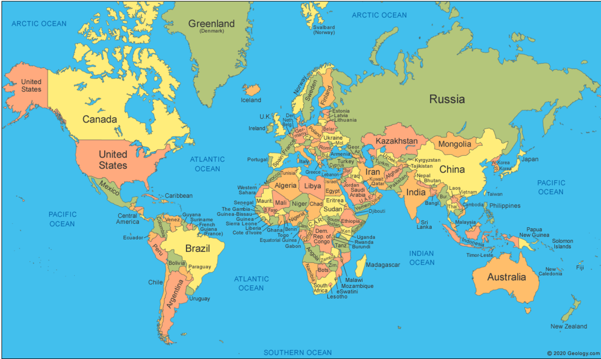

|
 |
(8/8)
Show/hide EXIF data| EXIF Tag | Value |
|---|---|
| BackgroundColor | 255 255 255 |
| BitDepth | 8 |
| BlueX | 0.15 |
| BlueY | 0.06 |
| ColorType | RGB |
| Compression | Deflate/Inflate |
| Datecreate | 2021-10-26T14:58:58+00:00 |
| Datemodify | 2021-10-26T14:58:58+00:00 |
| Directory | . |
| ExifToolVersion | 12.76 |
| FileAccessDate | 2025:10:28 19:34:48-04:00 |
| FileInodeChangeDate | 2025:10:28 18:54:30-04:00 |
| FileModifyDate | 2025:10:28 18:54:30-04:00 |
| FileName | world.png |
| FilePermissions | -rw-r--r-- |
| FileSize | 666 kB |
| FileType | PNG |
| FileTypeExtension | png |
| Filter | Adaptive |
| Gamma | 2.2 |
| GreenX | 0.3 |
| GreenY | 0.6 |
| ImageHeight | 897 |
| ImageSize | 1500x897 |
| ImageWidth | 1500 |
| Interlace | Noninterlaced |
| MIMEType | image/png |
| Megapixels | 1.3 |
| ModifyDate | 2021:10:26 15:02:58 |
| RedX | 0.64 |
| RedY | 0.33 |
| Warning | [minor] Text/EXIF chunk(s) found after PNG IDAT (may be ignored by some readers) |
| WhitePointX | 0.3127 |
| WhitePointY | 0.329 |